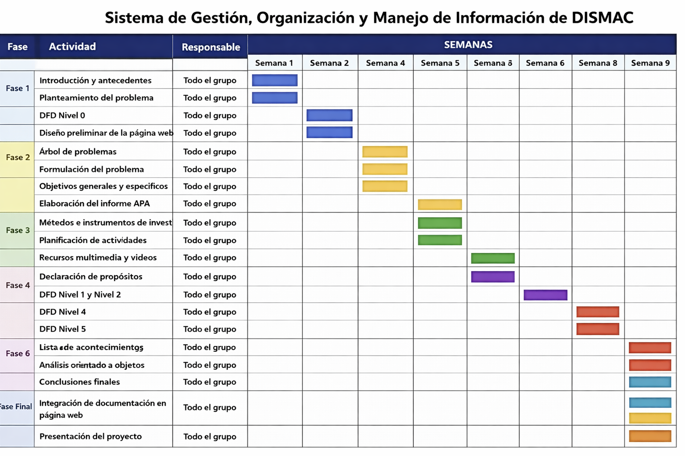
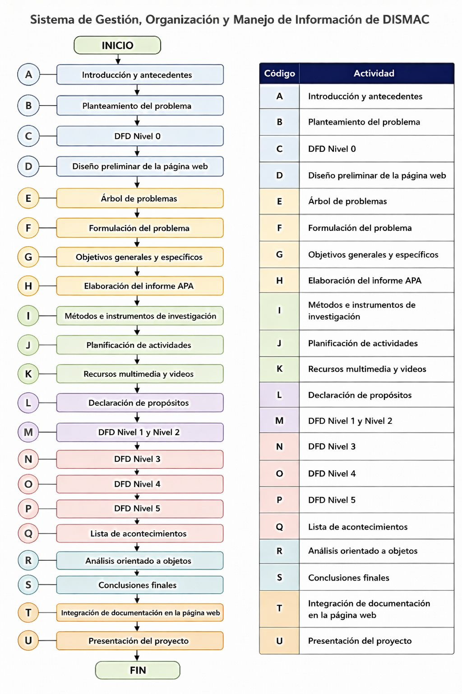
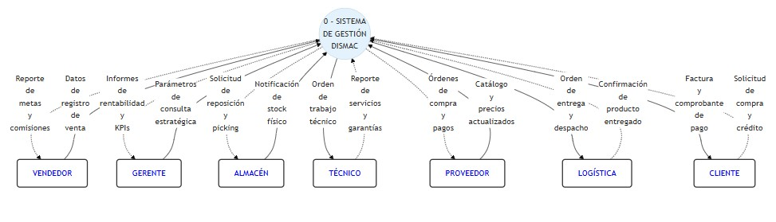
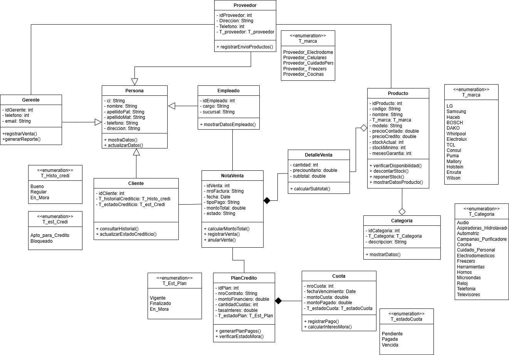

Bienvenido a DISMAC
Sistema de Análisis y Diseño para la Gestión - DISMAC.
Marco Teórico
Introducción
Actualmente, las empresas comerciales como DISMAC enfrentan grandes desafíos en la gestión de información debido al crecimiento de sus operaciones tanto en tiendas físicas como en plataformas digitales. La correcta administración de ventas, inventarios, pedidos, entregas y servicios técnicos es fundamental para garantizar la eficiencia operativa y la satisfacción del cliente. DISMAC, como empresa líder en la comercialización de electrodomésticos en Bolivia, maneja múltiples procesos interrelacionados que requieren una integración eficiente de la información. Sin embargo, la existencia de sistemas parcialmente conectados y procesos manuales genera dificultades en la sincronización de datos, afectando la toma de decisiones y la calidad del servicio. El presente proyecto tiene como objetivo realizar el análisis y diseño de un sistema integral que permita optimizar la gestión de información en DISMAC, utilizando metodologías de análisis estructurado y orientado a objetos, con el fin de mejorar la eficiencia operativa y fortalecer su competitividad en el mercado.
Antecedentes
Dismac S.A. fue fundada en 1985 bajo el nombre de Dismatec S.A., consolidándose como una de las principales empresas del sector retail en Bolivia.
DISMAC es una empresa boliviana con amplia trayectoria en la comercialización de electrodomésticos, tecnología y artículos para el hogar. A lo largo de los años, ha expandido sus operaciones mediante múltiples sucursales y plataformas digitales.
El crecimiento de la empresa ha generado una mayor complejidad en la gestión de información, especialmente en áreas como:
- Control de inventarios en distintas sucursales
- Coordinación de ventas físicas y online
- Gestión de entregas a domicilio
- Seguimiento de servicios técnicos
Actualmente, muchos de estos procesos presentan limitaciones debido a la falta de integración total de los sistemas, lo cual impacta en la eficiencia y calidad del servicio.
Planteamiento del Problema
DISMAC, como empresa consolidada en la comercialización de electrodomésticos y tecnología en Bolivia, ha experimentado un crecimiento significativo tanto en número de sucursales como en canales de venta, incluyendo tiendas físicas y plataformas digitales. Sin embargo, este crecimiento ha traído consigo una mayor complejidad en la gestión de sus procesos internos.
Actualmente, la empresa enfrenta dificultades en la integración de la información entre sus diferentes áreas operativas, tales como ventas, inventarios, pedidos, logística de entregas y servicio técnico. Aunque existen sistemas que apoyan ciertas funciones, estos no se encuentran completamente integrados, lo que genera inconsistencias en los datos y retrasa la ejecución de procesos clave.
Por ejemplo, la falta de sincronización entre inventarios de sucursales y almacenes centrales puede ocasionar la venta de productos no disponibles, generando cancelaciones o retrasos en las entregas. Asimismo, los procesos manuales en el seguimiento de pedidos y servicios técnicos dificultan el control y la trazabilidad, afectando directamente la experiencia del cliente.
Además, la ausencia de herramientas analíticas integradas limita la capacidad de los gerentes para tomar decisiones estratégicas basadas en información actualizada y confiable. Esto impacta en la planificación de compras, control de stock y optimización de recursos.
En consecuencia, estas deficiencias provocan demoras en la atención al cliente, aumento de costos operativos, errores en los procesos y una disminución en la competitividad de la empresa en el mercado.
Árbol de Problemas

Formulación del Problema
Problema central: Limitaciones en la integración y sincronización de la información de inventarios, ventas y servicios en DISMAC, que dificultan el control operativo y la toma oportuna de decisiones.
La empresa DISMAC dispone de herramientas informáticas para apoyar sus operaciones comerciales; sin embargo, la falta de integración completa entre los diferentes procesos y módulos de información puede generar inconsistencias en los datos, retrasos en la actualización del inventario y dificultades en el seguimiento de pedidos y servicios.
Pregunta de investigación:
¿Cómo puede un sistema de información, diseñado mediante el paradigma del Análisis Estructurado a través de modelos ambientales y Diagramas de Flujo de Datos (DFD), y complementado con el Análisis y Diseño Orientado a Objetos mediante diagramas UML como casos de uso, clases y secuencia, contribuir a mejorar la integración, organización y gestión de la información en DISMAC, optimizando el control de inventarios, ventas y servicios para apoyar la toma de decisiones y la eficiencia operativa?
Causas principales: Integración parcial entre sistemas, retrasos en sincronización, limitaciones en trazabilidad, restricciones funcionales para reportes, falta de procesos estandarizados, dificultad para generar reportes oportunos.
Efectos: Diferencias en disponibilidad de productos, retrasos en atención, menor eficiencia operativa, dificultades en planificación de compras, impacto en experiencia del cliente.
Propósito del Estudio
El presente estudio tiene como propósito diseñar y estructurar un sistema de información para la gestión de inventario y ventas de electrodomésticos en la tienda DISMAC, reemplazando el registro manual y desarticulado por un sistema digital integrado que centralice la información y optimice los procesos comerciales.
Para alcanzar este propósito se aplicarán dos enfoques fundamentales del desarrollo de software:
- Análisis y Diseño Estructurado, mediante la construcción de modelos ambientales y Diagramas de Flujo de Datos (DFD).
- Análisis y Diseño Orientado a Objetos, mediante la elaboración de diagramas UML: casos de uso, clases y secuencia.
Objetivo General
Diseñar el sistema de información para la tienda DISMAC mediante la aplicación conjunta del Análisis y Diseño Estructurado y del Análisis y Diseño Orientado a Objetos, con el fin de modelar de manera completa los procesos, datos y componentes necesarios para la futura implementación del sistema de ventas e inventario de electrodomésticos.
Objetivos Específicos
- Elaborar el modelo ambiental del sistema, identificando los agentes externos y los flujos de información con el entorno.
- Diseñar el Diagrama de Contexto que represente la relación del sistema con los actores externos (clientes, vendedores, proveedores y administradores).
- Construir los Diagramas de Flujo de Datos (DFD) de nivel 0 y nivel 1, identificando procesos, almacenes de datos y flujos de información del sistema.
- Especificar los procesos y flujos de datos mediante descripciones estructuradas que documenten la lógica del sistema.
- Identificar los actores del sistema y elaborar el Diagrama de Casos de Uso con sus respectivas especificaciones.
- Diseñar el Diagrama de Clases con los atributos, métodos y relaciones necesarios para representar la estructura estática del sistema.
- Desarrollar Diagramas de Secuencia para visualizar la interacción dinámica entre objetos en los procesos críticos: registro de venta, control de inventario y generación de reportes.
- Analizar los problemas actuales derivados del registro manual de inventario y ventas en DISMAC.
- Definir los requerimientos funcionales y no funcionales del sistema a partir del análisis realizado.
- Proponer un modelo conceptual y lógico que sirva como base para la posterior implementación del sistema.
Planificación de Actividades



Análisis Estructurado
Modelo Ambiental
[Entidades externas: Cliente, Proveedor, Administrador] → Sistema de Ventas DISMAC
Modelo de Comportamiento

Orientado a Objetos
Diagrama de Clases
Clases principales: Venta, Producto, Cliente, Inventario, Proveedor. Atributos y métodos definidos con visibilidad privada/pública.

Caso de uso de Registro de venta

Recursos Multimedia
🎥 Modelo de Caso de Uso de Sistema con Drawio
📐 Modelo de Caso de Uso de Negocio con Enterprise Architect
Recursos.
Contacto
Equipo de trabajo:
- Univ. Avilés Loza Michelle Jeicy
- Univ. Condori Aguilar Eddy Omar
- Univ. ...
- Univ. ...
- Univ. ...
- Univ. Lima Ramos Joseph
Email: soporte@dismac.com.bo
Teléfono: +591 2 211-2233
Dirección: Av. San Martín #123, Santa Cruz - Bolivia
Repositorio: github.com/dismac/analisis-software